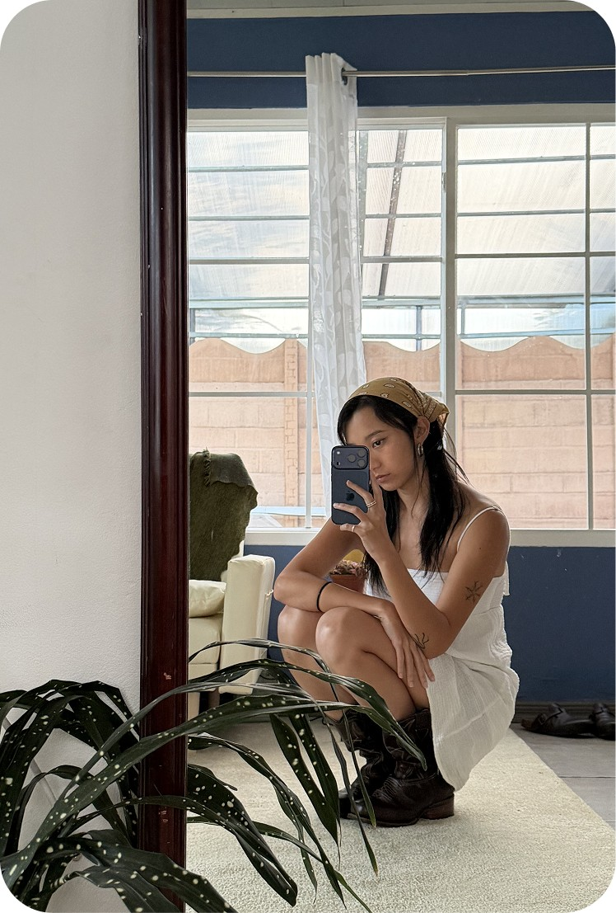

About
Product Designer at BAC Latam

I'm Yenny Rong.
I came to design sideways. I was a business student, and in my third year I started designing in my internship. It went well enough that I did a master's in User Experience and Digital Service Design.
UX research became my favorite part of the design process. These days I work on AI-driven fintech, where the hard part isn't drawing the screen — it's making something genuinely complicated feel obvious to someone who just wants their money to behave.
I love speaking to people, although I'm an introvert. Getting to know someone's perspective and actually listening to their opinion is what drives me to design a better experience in every product.
- Based in
- Barcelona, Spain
- From
- Costa Rica
- Designing for
- 5 years
- Studied
- UX & Digital Service Design, ELISAVA
Work
BAC Latam
Product Designer
2025 — Present
Weecover
UX/UI Designer
2025
REVOLVE
Product Designer
2023 — 2025
Florasis Cosmetics
Copywriter
2021 — 2022
Education
ELISAVA
MA, UX and Digital Service Design
2022 — 2023
Shenzhen University
BA, Business Management
2018 — 2022
Honours
LAUS Award — Platinum
Project “Re·do”
Masters Award
Project “Re·do”